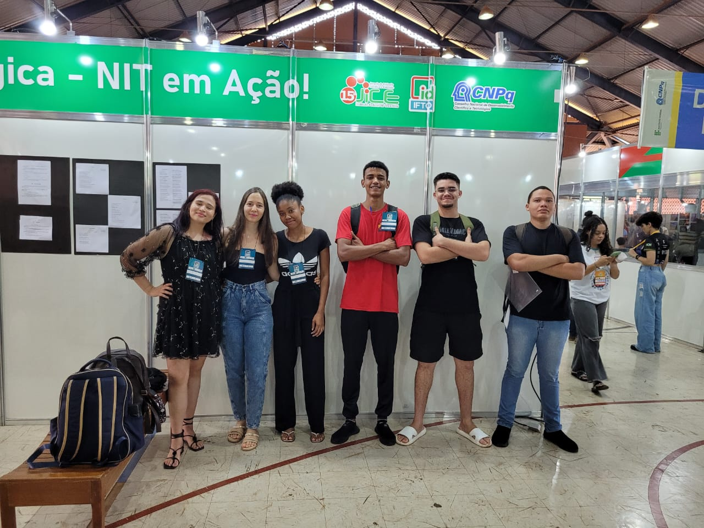

SOBRE
O Identidade IFTO 2024 é um evento que apresenta os serviços do Instituto Federal do Tocantins,
com a integração dos trabalhos desenvolvidos na pesquisa, extensão, inovação, arte e cultura, diversidade e ensino, assistência estudantil,
desafios científicos, rotinas administrativas e gestão de pessoas, bem como reforça a imagem do Instituto Federal junto à comunidade tocantinense.
O evento reúne, em um só lugar, a 15ª edição da Jornada de Iniciação Científica e Extensão (Jice), a 11ª edição do Festival de Talentos Estudantis (IFestival),
a 6ª edição do AfroIdentidade e a 6ª edição do Integra IFTO.
Desafio de robótica
O Desafio de Robótica é caracterizado como um espaço destinado à competição de caráter educacional de robôs autônomos, construídos por servidores e estudantes entusiastas da cultura maker no IFTO, os quais atuam no cumprimento de determinadas tarefas específicas organizadas em cinco modalidades: Seguidor de Linha, Resgate Presencial, Resgate Simulado, Sumô 3 kg e Sumô 750 g.
Nesta sétima edição, O Desafio de Robótica será realizado, presencialmente, no âmbito do Espaço de Inovação, durante a 15ª Jornada de Iniciação Científica e Extensão - JICE, que ocorre dentro do Identidade IFTO - ID_IFTO, nos dias 16 a 18 de outubro de 2024.

Critica sobre o evento
O evento teve alguns imprevistos que resultaram em atraso na inicialização, que duraram cerca de 2 horas.